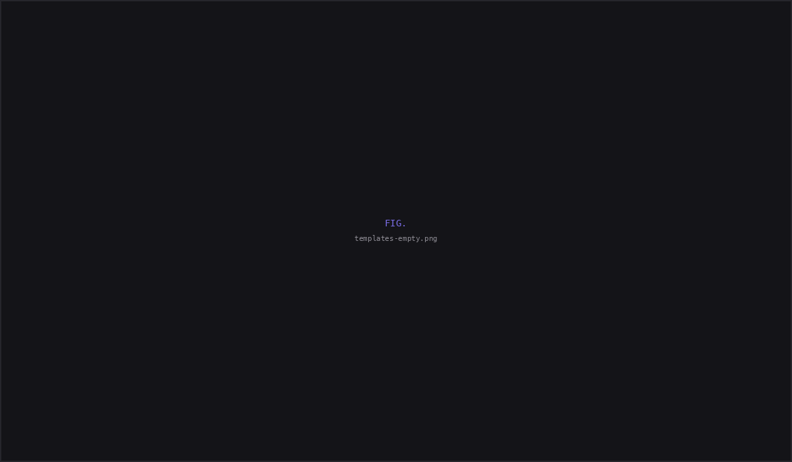
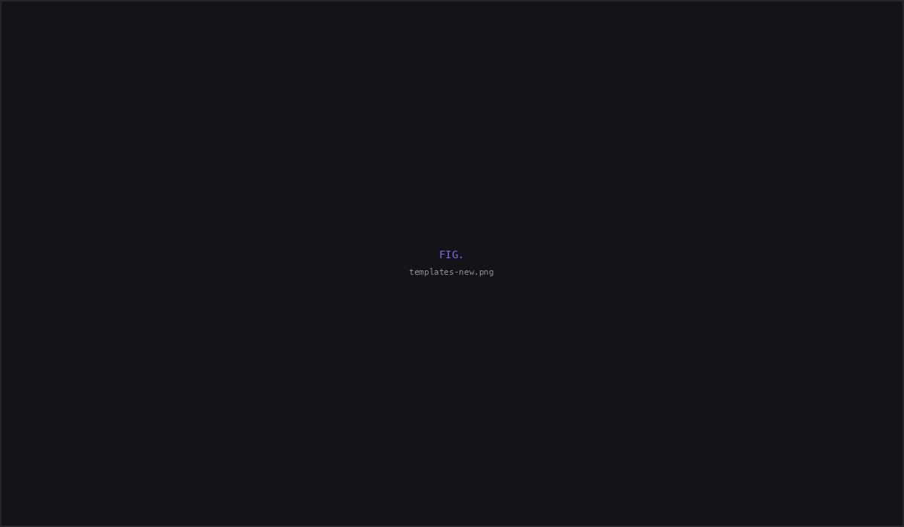
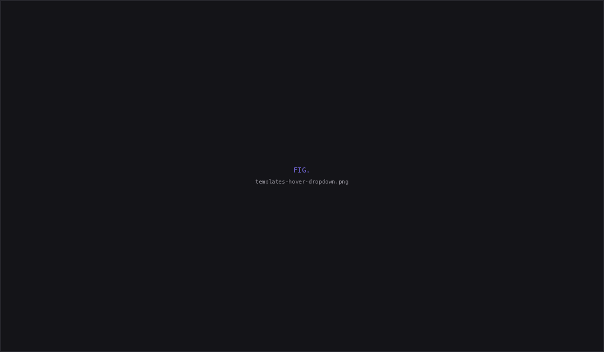
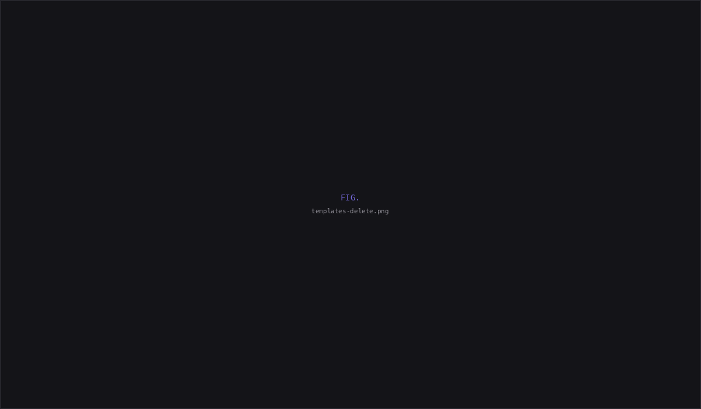
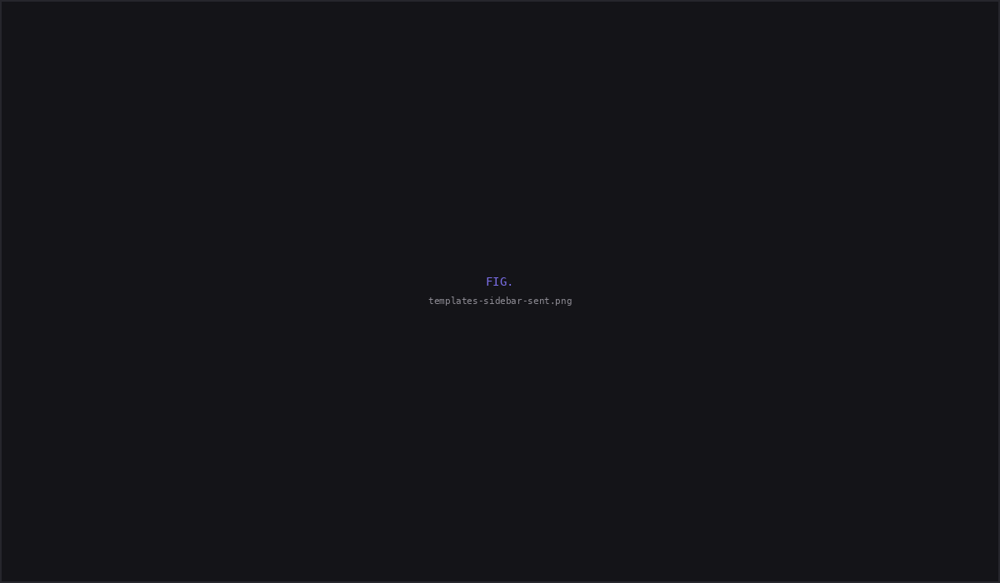
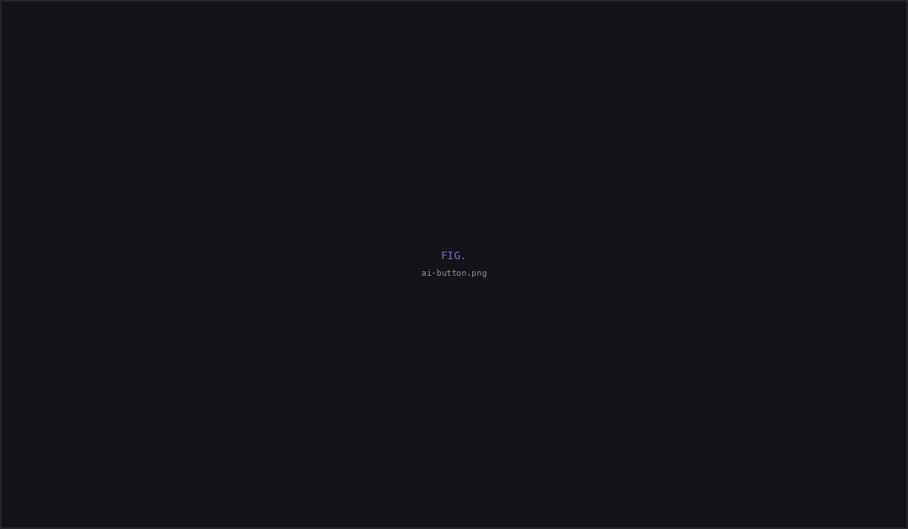
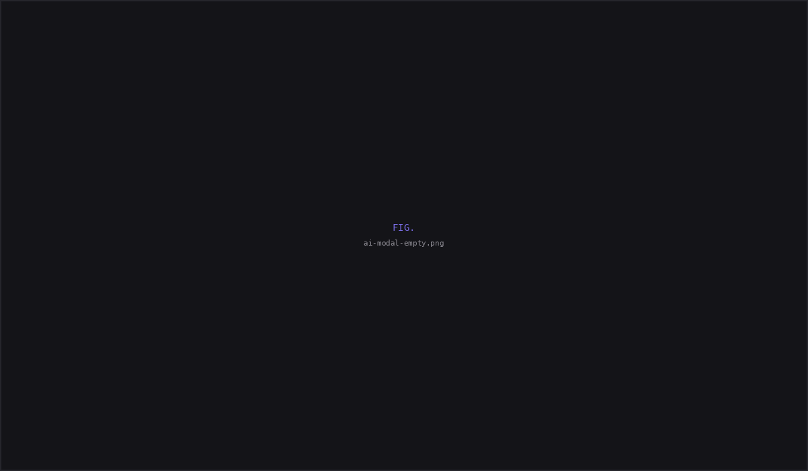
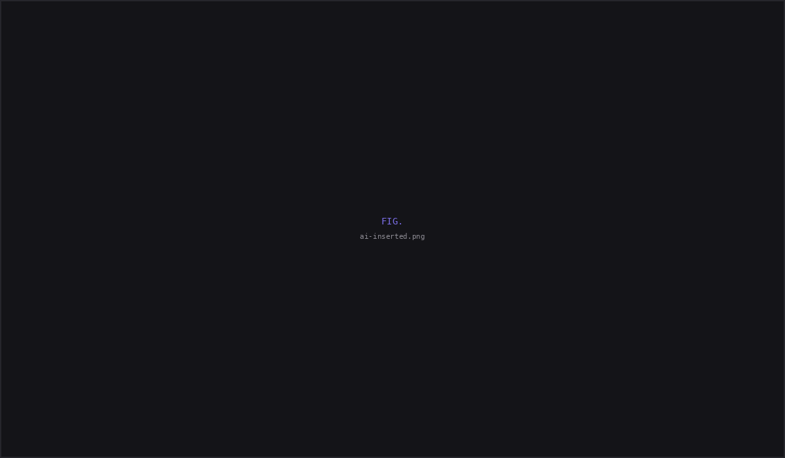
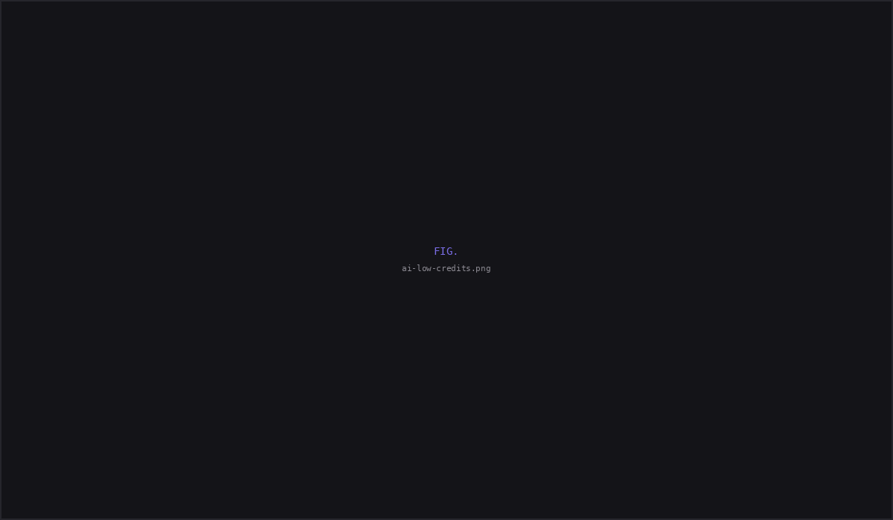
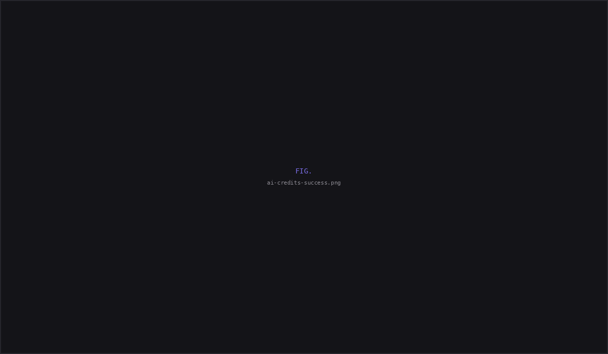

MailerOne — AI email generation, before Gmail shipped it.
Complete Templates module and AI-assisted email creation flow for a live SaaS email marketing platform — sole designer, 40+ screens, shipped to production.
| Company | Sapmen C |
| Role | UI Design Intern — sole designer on this module |
| Timeline | March – August 2025 (6 months) |
| My scope | Templates module, AI email flow |
| Status | Live — shipped to production |
The brief
MailerOne is Sapmen C's email marketing SaaS — a live product with real users. The platform needed two things built from scratch: a full Templates module and an AI-powered email generation feature. I was the only designer on both.
What I delivered
40+ production screens across six months. A 4-step AI email generation flow that shipped before Gmail released a similar feature. Full template lifecycle from empty state to analytics — all shipped to production.

Founder briefing → PRD → existing components → hi-fi screens
There was no competitor audit. This wasn't a redesign of another product — the platform already existed and had its own design system, component library, and user base. The founder walked me through the product and its users. The PM handed me a PRD and wireframes.
My job was clear: take the existing component library and turn functional requirements into production-ready hi-fi screens. Forty-plus of them, in an agile cadence across six months.
I want to be honest about scope here. This was UI design work — not strategy, not user research, not information architecture from scratch. I had requirements, I had components, and I had screens to ship. The decisions I made lived inside that frame — and there were real decisions to make.
Templates module
The core of the module is a list-detail layout. Templates sit in a scrollable list on the left — each showing the template name, a status indicator, and a timestamp. Selecting any template loads a full email preview on the right, with the subject line at the top and an Edit button to jump into the editor. Users never lose context. They can scan, compare, and preview without navigating away from the list.
Empty state → first template
First-time users land on a centered illustration with a single action: "+ Create Template." No onboarding tour, no feature walkthrough. Just the one thing they need to do.


Template actions
Hovering on a template reveals a dropdown — Rename, Duplicate, Delete. Delete triggers a confirmation modal because templates are high-value campaign assets. A user who accidentally deletes a template they spent an hour building isn't coming back happy.


Analytics sidebar
For sent templates, a sidebar slides in showing per-template stats: Sent to, Received, Opened, Bounced — alongside template metadata. No separate analytics page. No extra navigation. The data lives where the template lives, because that's where decisions about that template get made.

The editor
The email editor carries a toolbar with mode tabs, device preview toggles, and export options. The Details panel is where the operational work happens — setting the Subject line, selecting Targeted Segments from a searchable dropdown, and attaching files.

Designing AI email generation before Gmail did it
The AI email recommendation feature I designed is similar to what Gmail now offers — describe what you want, get a polished email back. But I designed and shipped this in early 2025, before Gmail released their version. We were first.
The most important design decision was the entry point. The "Generate With AI" button sits in the editor toolbar — right where users already are when they want to create something. No separate AI section to find. No context switch.

Clicking opens the "Magic by AI" modal. A large preview area dominates the top, with a prompt input at the bottom: "Type your idea.. we'll draft your mail." The user sees their credit balance and cost before they commit.

The user types a plain-language description. A loader appears while the AI works. The credit usage bar updates to show consumption.
The AI returns a fully formatted marketing email — subject line, body copy, product images, and a CTA. Three actions at the bottom: Regenerate, New Prompt, and Insert. The user is never locked into a bad output.

Hitting Insert drops the generated template straight into the editor. The full editing toolbar is available. The AI output becomes a starting point the user owns — not a locked artifact, but a draft they can rewrite and make theirs.

Edge case: credits exhausted
When a user runs out of credits, the modal surfaces a clear message with a "Purchase Credits" button. The credit usage bar reinforces consumption. The flow doesn't dead-end — it routes them toward buying more.


The decision I lost twice
Round one: the email scheduler
I designed the email scheduler with an enable/disable toggle. My reasoning: users should consciously opt into scheduling. Let them decide. Let the interface be transparent about what's happening.
The founder pushed back. His position: the intent is to make users use this feature. If scheduling is opt-in, most users will never find the toggle, never try the feature, and the platform's value sits unused. Remove the toggle. Make it default-on.
I removed the toggle. The scheduler shipped default-on — not an option within the workflow, but the workflow itself.
Round two: AI email recommendations
The exact same thing happened with the AI recommendation feature. I designed it with the same enable/disable toggle. Same principle — users should consciously choose to use AI-assisted features.
The founder gave me the same answer. Same logic. Remove the toggle. Default it on.
Twice I walked in with the same UX instinct. Twice I walked out having removed the same button.
Enable/disable toggle. User opts in consciously. Respects autonomy — but risks the feature going unnoticed.
Feature on by default. No toggle. It's part of the workflow — always visible, always active. The feature becomes the experience, not an option within it.
The hardest part of this project wasn't any single screen or interaction. It was making the case for conscious user control and losing that argument — twice.
Reflection
I had a principle I believed in. It failed. And instead of adapting my argument, I repeated it.
The toggle story is the thing I keep thinking about. Not because the founder was wrong — if a feature genuinely helps users and nobody uses it because it's hidden behind a toggle, I've designed a beautiful ghost. Sometimes removing a choice is the design decision.
But the fact that I hit the same wall twice with the same approach tells me something. I had a conviction about user autonomy. When it was rejected, I didn't reframe it or propose an alternative. I just accepted it and moved on.
What I'd do differently
I'd fight for a middle ground before the decision was made for me. Default-on with an opt-out in settings isn't the same as a prominent toggle on the main screen. But it isn't the same as no toggle at all, either. That compromise existed and I didn't push for it — I made my case for full user control, lost, and accepted it, when I could have proposed a third option that served both the business need for adoption and my belief that users deserve an exit.